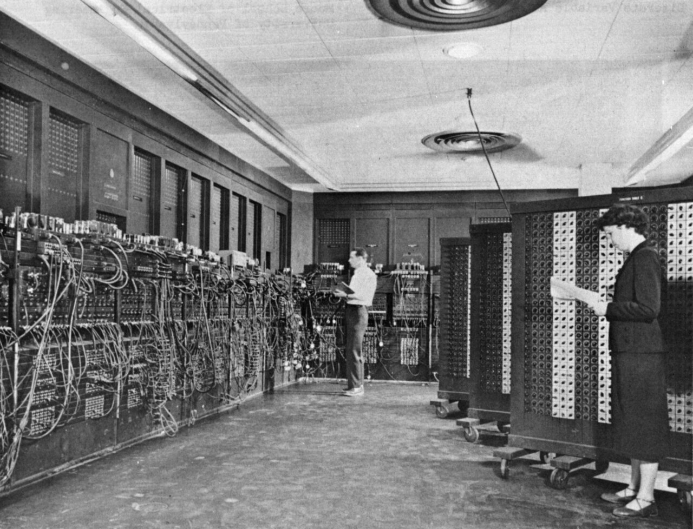
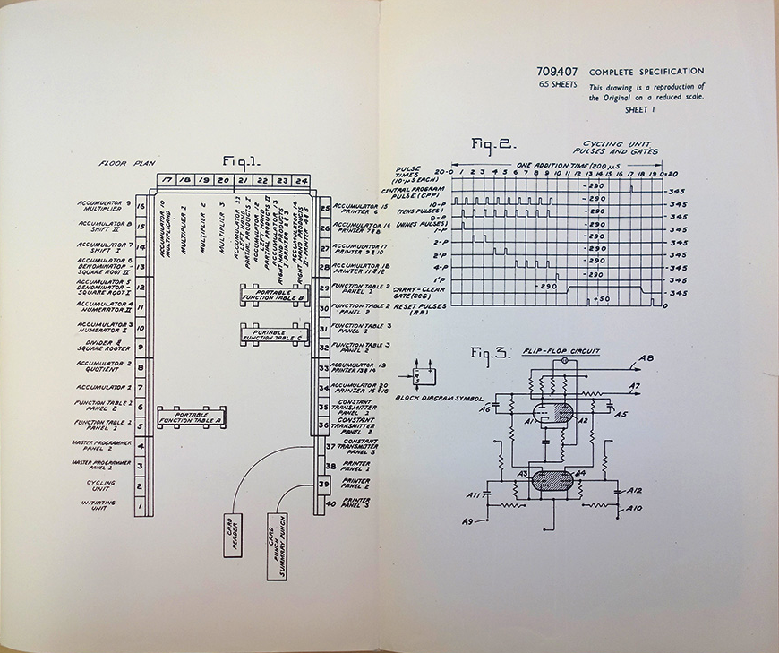
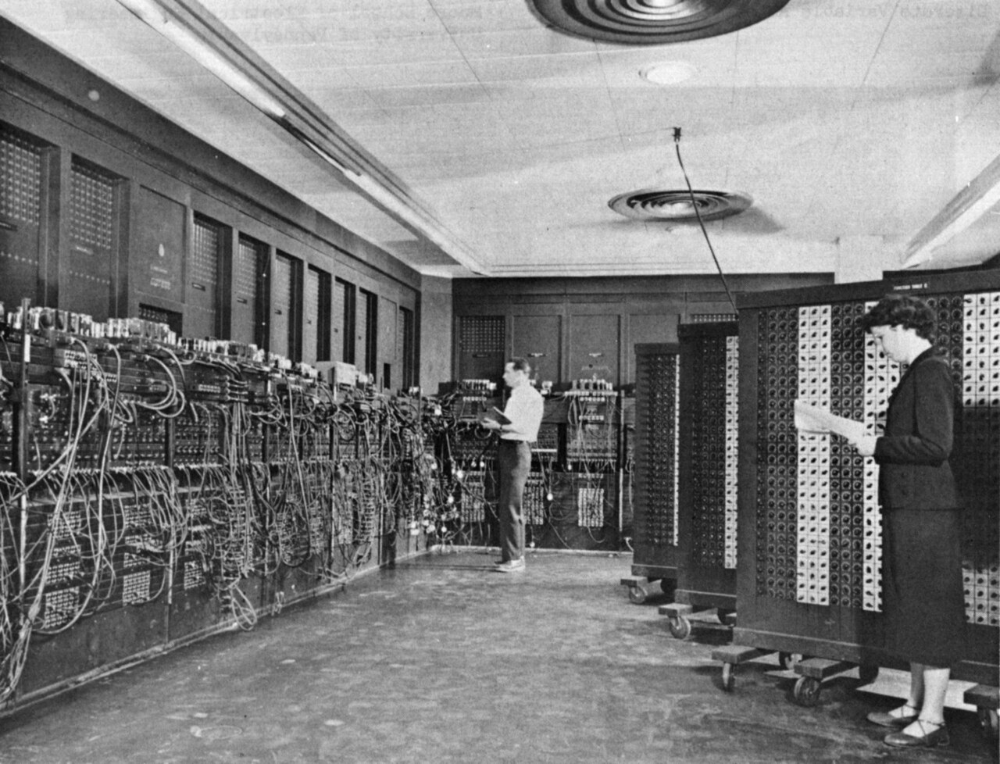
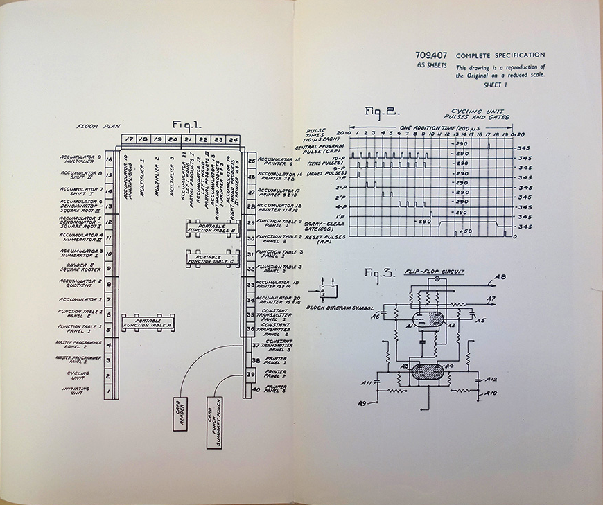

Первый в мире процессор. ENIAC
Может чуть-чуть не процессор
ENIAC и его роль в истории
ENIAC был первым компьютером, который мог выполнять разнообразные вычислительные задачи путем программирования. Это был невероятный шаг вперед по сравнению с предыдущими механическими и электромеханическими устройствами, которые ограничивались выполнением одной задачи.
Архитектура и характеристики ENIAC
ENIAC был огромным по размерам и потреблял огромное количество энергии. Вместе с тем он имел вычислительную мощность, которая была впечатляющей для своего времени. ENIAC мог выполнять до 5 000 операций в секунду, что считается невероятным достижением для 1940-х годов.
Однако программирование ENIAC было нетривиальной задачей. Программирование осуществлялось путем физического переключения проводов и настройки реле. Это сделало процесс переключения между задачами крайне трудоемким и времязатратным.
Влияние на развитие технологий
ENIAC оказал огромное влияние на развитие компьютерных технологий. Он продемонстрировал, что электроника может быть использована для автоматизации сложных вычислений и задач. Несмотря на свои ограничения, ENIAC предоставил фундаментальную основу для развития более совершенных и программируемых компьютеров.
Завершение эры и начало новых возможностей
С течением времени ENIAC уступил место более компактным и эффективным компьютерным системам. Однако его наследие живет дальше. Он был первым шагом в эволюции процессоров и компьютеров, которая привела к созданию более мощных, быстрых и универсальных устройств.
 


